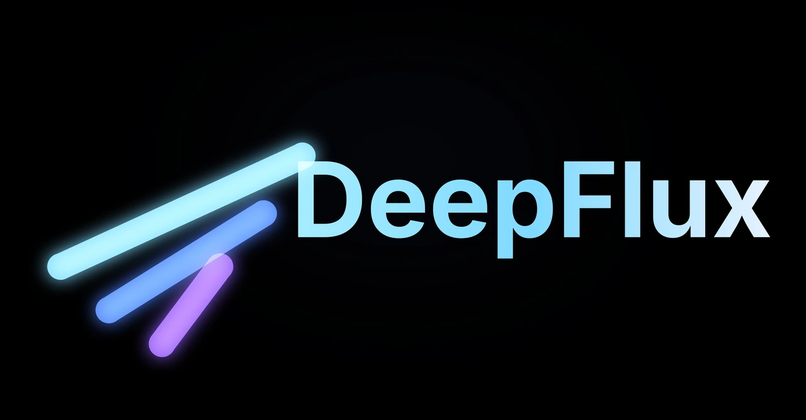

Download
DeepFlux 3.8 · Windows 10/11 64-bit · posted 2026-09-13
AI agent — finds, downloads & sets the app up by chat
Torrent engine with stream while downloading
IPTV: live TV, movies & series with EPG guide
Embedded Chromium browser with agent control
Download manager: HTTP, HLS/DASH & YouTube
Player: Dolby Vision, SVP & online subtitles
Audio player with MilkDrop visualizer
IRC, RSS, offline voice input & file manager